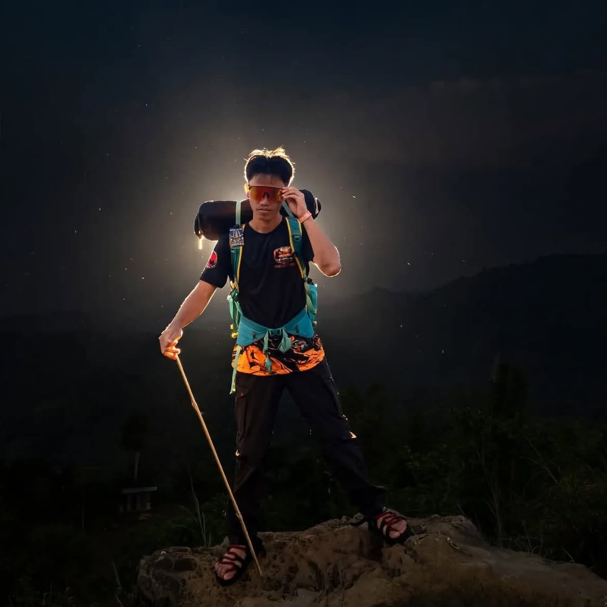
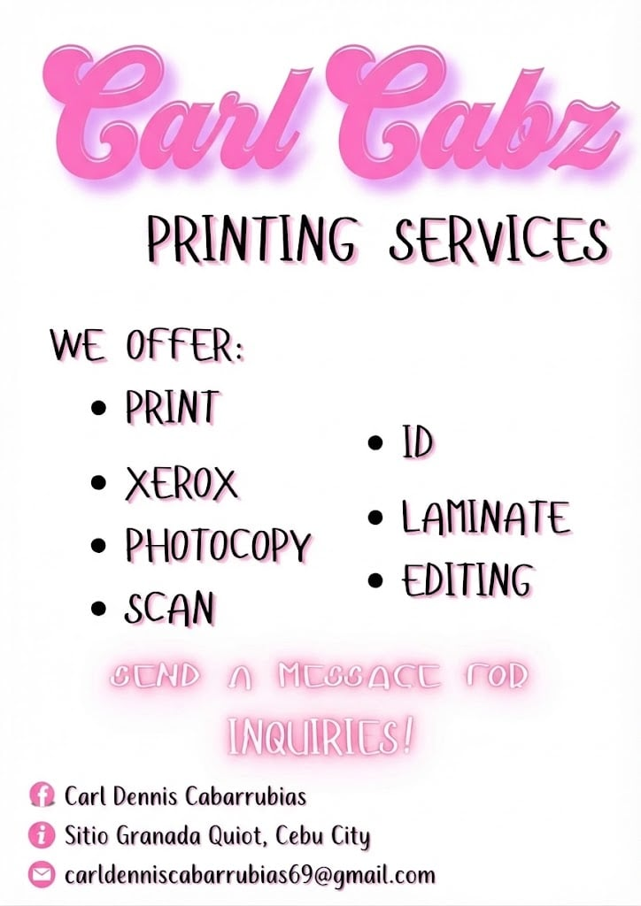
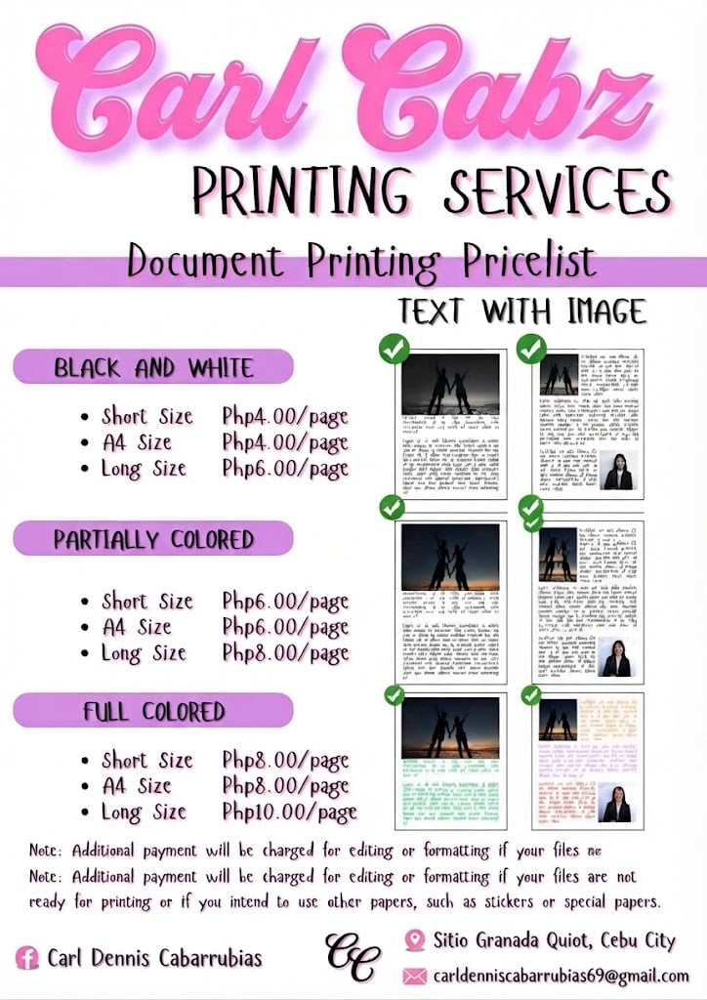
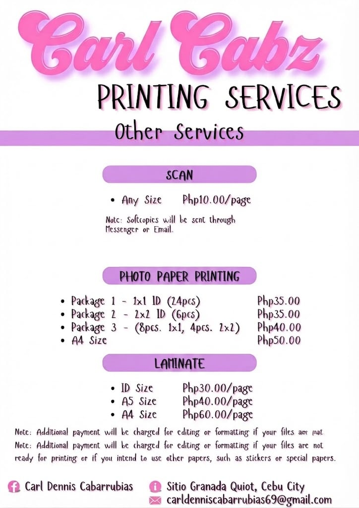
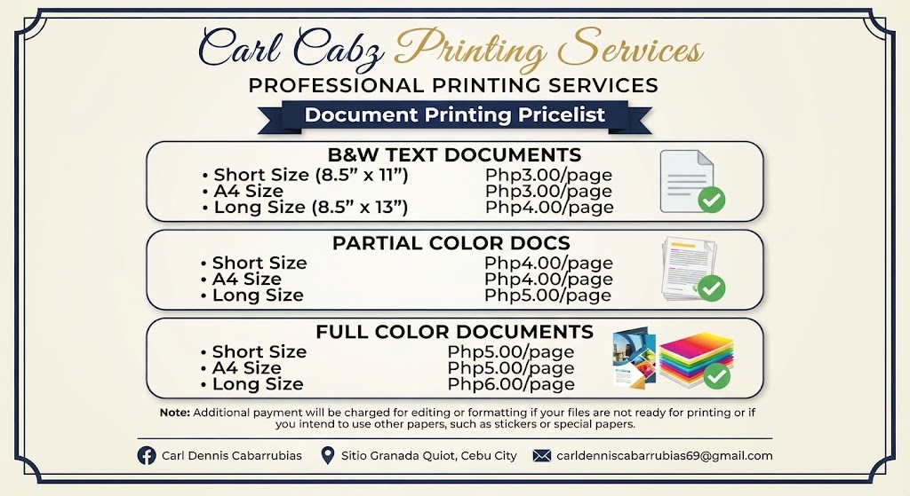
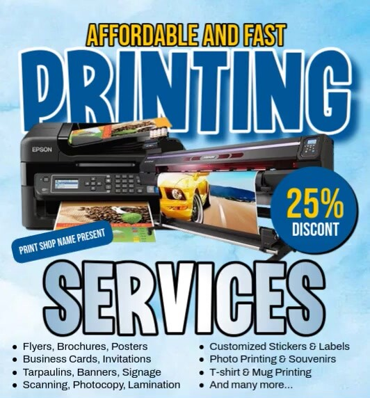
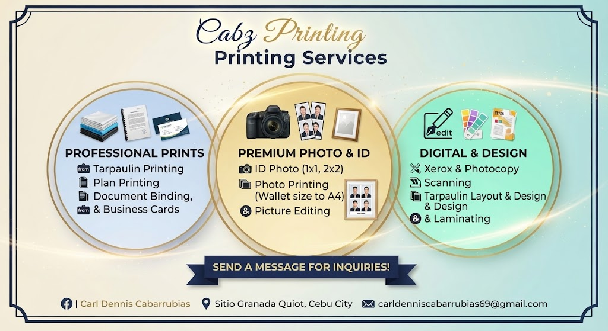
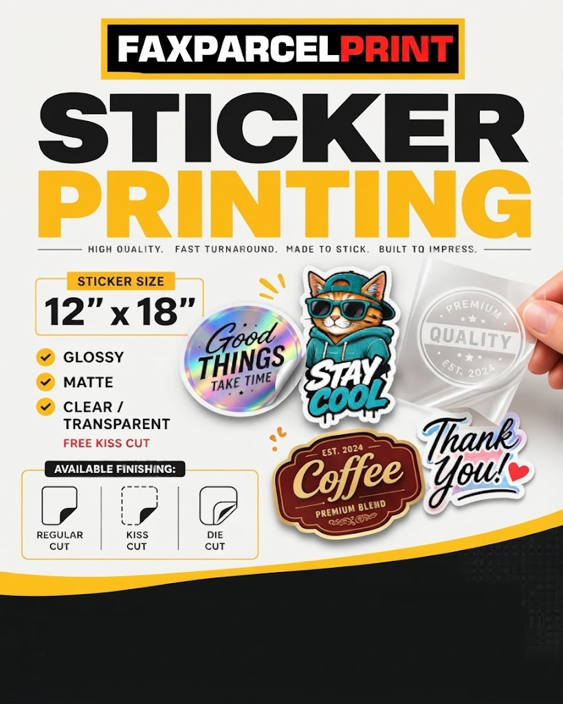

01 / WEB
HTML & CSS
Creating page structure, layouts, colors, and responsive designs.
Currently practicing
Hi, I'm Carl Dennis M. Cabarrubias - an Information Technology student who enjoys exploring web development, building projects, and learning how technology can solve real problems.

A student building skills one project at a time, with a focus on practical learning and steady improvement.

I'm currently studying Information Technology and developing my foundation in programming, web design, and system development. I like learning by doing, trying new ideas, and improving my work through feedback.
This portfolio brings together selected school activities, practice projects, skills I'm developing, and my quiz results. I'll keep updating it as I learn more.
An honest snapshot of the tools and areas I'm practicing. I'll update this section as my skills grow.
Creating page structure, layouts, colors, and responsive designs.
Learning simple interactions and making websites more useful.
Exploring how Python-based web projects and pages are organized.
Planning clean interfaces, researching issues, and improving through practice.
Note: The progress bars are visual estimates. Change them to reflect your actual ability.
School work and practice builds. Replace each image area with your own screenshot and edit the details to match what you actually did.

A school project focused on supporting better waste-management practices. Update this description with the system's real features and your individual contribution.
Ask me about it ↗
A beginner exercise creating a Django project and app, then displaying a simple page from a view.
Ask me about it ↗
A practice game concept exploring stages, checkpoints, respawning, and simple player progression.
Ask me about it ↗Make it yours. Add your own images, describe what you personally worked on, and remove any project that you did not complete or cannot explain.
An optional showcase for printing-business photos, design samples, and other creative work. This section is separate from the required school projects above.



This record is based on my Semifinal activities and Final Exam.
Replace this with your official score and total points.
Replace this with your official score and total points.
These scores reflect my official results from the Semifinal quizzes and Final Exam cec-exam.web.app
I'm open to learning, collaborating, and connecting with fellow students and tech enthusiasts.
Send a message or find me through a professional profile.
Message Me ↗Your message will be visible to anyone who visits this website.